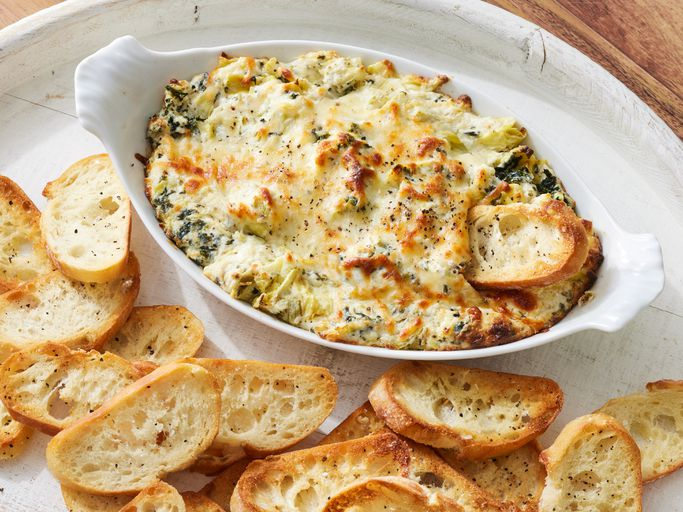

Spinach Dip

Description
a delicious spinach dip perfect for parties or snacking
Ingredients
- cream cheese
- cheese
- garlic
- artichoke
- spinach
Steps
- mix all the ingredients
- bake in oven at 350°F until dip starts to bubble and is lightly browned
- serve
Home